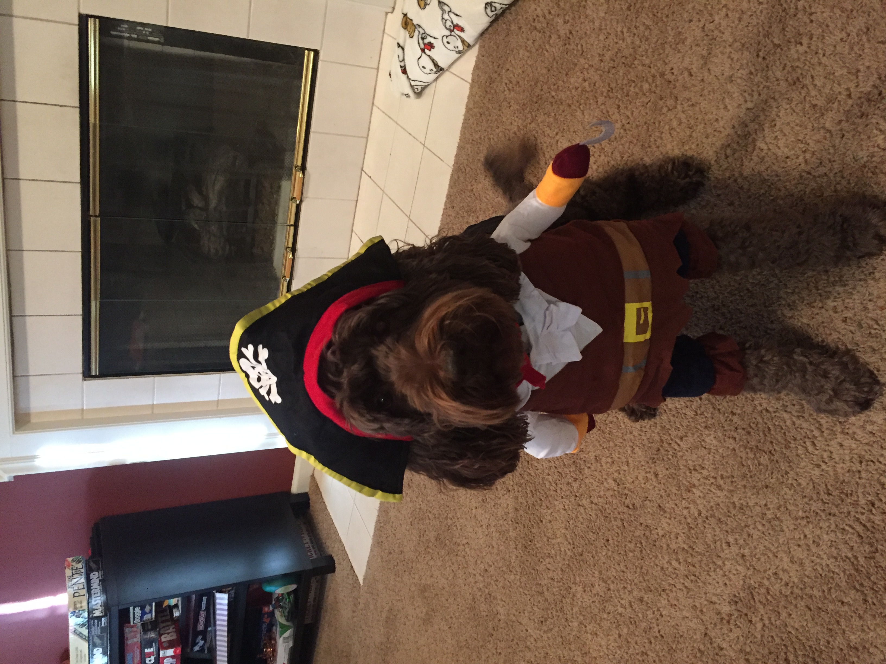
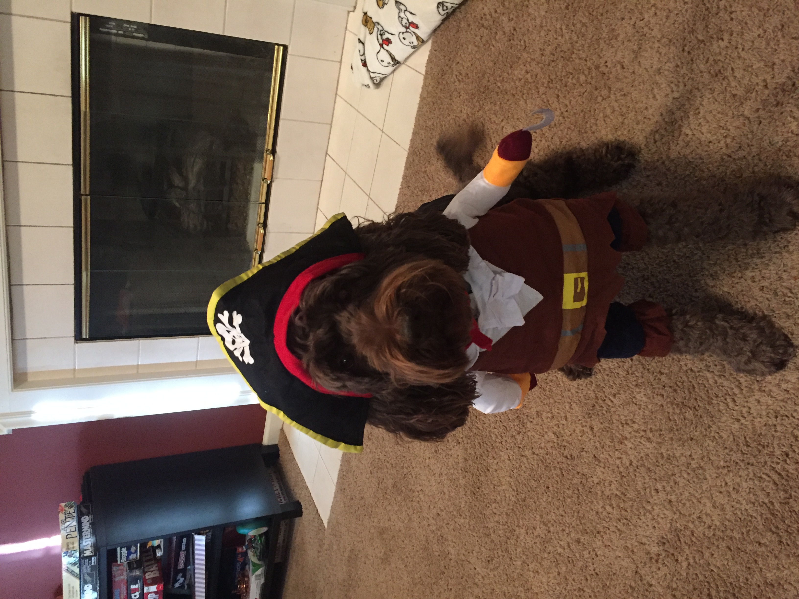

Pets
Skip to your favorite petsarrow_forward
Terry
Terry is three years old. He spends his days sitting in the sun and eating. Among his favorite foods are dark, leafy greens, strawberries, and watermelon. He also appreciates extra calcium sprinkled on his meals to make his shell big and strong. He spends hours a day eating as his mouth is quite small but won’t eat food after its been dried out by the sun for a while.
Terry is a tortoise of few words. He is generally pretty quiet although he has a hidden sassy side to his personality especially when it comes to his food. Terry is a smart tortoise who can do a few tricks such as hiding in his shell or going for a swim in shallow water.
Photo Gallery
Likes
- Warm sun
- Large grass fields
- Watermelon
Rocky

Rocky is a young kitten that stays inside and cuddles with his owner all day. His favorite place is hang out is on the left side of the couch with his red blanket. When he's not laying down and sleeping, he's eating favorite snacks such as catnip and dirt. He also appreciates bellyrubs and head scratches, especially on Saturdays and Sundays.
Because Rocky enjoys resting and fueling up so much, he was a lot of energy in his freetime to for lots of zoomies and distracting his owners from doing their homework. He loves knocking things off of high surfaces and can't stand when things are where they're supposed to be. His owners thinks he's too cute to be yelled at so they usually let him get away with these things which is probably why he keeps doing it.
Photo Gallery


Likes
- Fuzzy Blankets
- Birds
- Treats
Bacon Q Dog

Bacon Q. Dog is a 9yr old labradoodle. He prefers to spend his days lounging among the three different beds/couches that his family has gifted him. He enjoys a walk or two around the neighborhood, as long as he can pretend that he doesn't see any of the other animals to avoid the embarrassment of not wanting to admit he has no wolf-like skills in chasing them.
At night just as the rest of the family is ready to relax, Bacon suddenly wants to release all of his energy. He will place his toys on a mini couch and frantically drag the couch around, giving his toys "a ride." There is also a lot of rolling. Lots and lots of rolling.
Photo Gallery

 

Likes
- Belly rubs
- Playing tug-of-war
- Sneaking onto the couch
Milktea
Milktea is a Scottish fold with a personality of a princess. She loves her veggies and refuses to eat anything dropped on the ground. She makes it clear when she has a demand of any sort by complaining in a loud, distinguished manner. If what she says could be translated, it probably would be, “This is atrocious, the water container has been empty for the 3rd time this week. I want to see the manager.”
Despite her cuteness and royalty, she actually suffers from a genetic disorder intentionally brought upon by humans. I highly advise against keeping a Scottish fold because they are in constant pain when they reach around 2 years old. Cartilage accumulates around her paw joints and tail joints and it becomes painful for them to even walk. She is living evidence of human’s cruelty of breeding animals to look pretty while sacrificing the animals’ health.
Photo Gallery


Likes
- Corn kernels served on human hands
- Sitting royally on suitcases
- Be alone and sit on soft surfaces
Cheeto (Chicken)

Cheeto is a cat who likes to eat a lot and play a lot. He has an obsession with his grandpa (human) and tries to get outside every single day. If he isn’t causing problems, he is usually hiding in a seven foot tall cat tree and sleeping
Another name for Cheeto is Chicken, because sometimes he sits very scrunched up and ends up looking like a rotisserie chicken. He was nicknamed this by one of his friends, and now he understands it as his own name. He is about six years old and still acts like a younger cat, despite being middle-aged
Photo Gallery


Likes
- Treats
- Exploring
- My Dad
Jax

Jax is a kitten, about five months old that I found this summer at a gas station while traveling to Marquette, Michigan. He was scared and malnourished, crying in the parking lot. I took him with me and after some healthy meals and a trip to the vet he is doing great!
My roommates and I just recently moved and Jax has been having a hard time getting used to the large house since we were previously living in a small apartment. Jax is incredibly playful and loves to run around, but when he is sleepy he is happy to be held
Photo Gallery


Likes
- Toys
- Going outside
- Attention
Luna

Luna is a German shepherd mix and a fireball of energy. Oftentimes, destroying anything in her path she will take and hide all your socks, shoes, and clothes for her to chew on. She loves playing catch at the park, it always gives her the zoomies.
Luna is a very jealous, loving, and protective dog. She really embraces her inner chihuahua and will bark at any stranger, car, or noise at night. She makes the perfect guard dog. But she is not at all aggressive. Luna is all bark no bite!
Photo Gallery


Likes
- Chicken
- Park
- Belly Rubs
Did you pay attention?
Drag and drop the images in the order of Terry, Milktea, and Bacon Q Dog. Careful! You can't put two images in one box (use the last box as a placeholder). Refresh the page to try again.